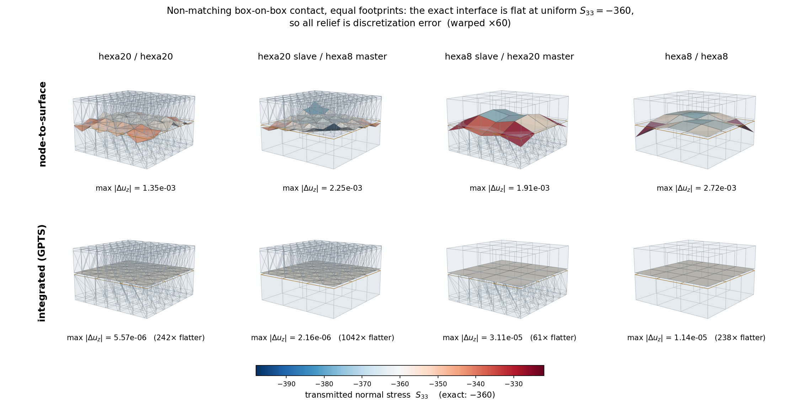
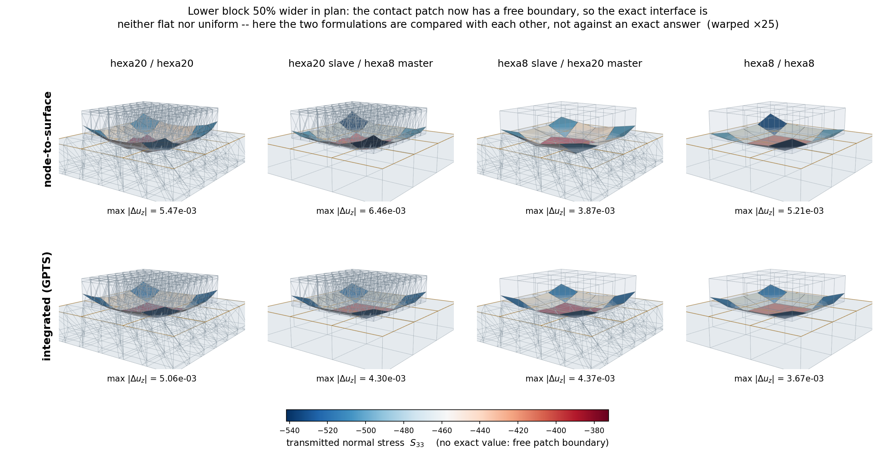

Contact mechanics: theory
This page documents the theory of penalty contact and the penalty tie in EdelweissFE. Formulation covers the gap,
the contact laws and Coulomb friction, measured from a slave node against flat master facets
(contactsurfaceelement, surfaceelementgenerator,
facetcontactgeometry, nodetodeformablesurfacepenalty);
Surface discretization and load transfer how the force reaches the nodes; then the integrated formulation: the slave
side as contact points (nodes, quadrature points of faces, and kinds other libraries add), one contact for every kind
of point, plane and axisymmetric models, the corners of the master, an initial overlap, the tie, and the contact with a
discrete rigid body; last, the integration into the implicit and explicit solvers and the verification. To learn the
integrated contact, start with Formulation, then Contact points: the slave side as points, then The integrated
formulation, step by step. Every formula stated here is implemented literally in the referenced modules and has been
verified against independent finite differences, symbolic differentiation, or analytic benchmark solutions; the
verification methodology is summarized at the end.
The stack targets small-deformation applications with possibly large relative sliding along the interface (e.g. anchorage problems: steel anchors in concrete channels, friction-dominated capacity, curved bearing surfaces, quadratic solid elements).
Formulation
The contact mechanics itself: how the gap is measured, what force answers it, and how friction is integrated. None of this is particular to EdelweissFE.
Gap kinematics
Throughout, \(\boldsymbol{x}_s\) denotes the current position of a slave node and \(\boldsymbol{x}_a,\; a = 1 \ldots k\) the current positions of the assigned master facet’s nodes (\(k = 3\) for Tria3, \(k = 2\) for Line2). The generalized coordinate vector of one contact pair is \(\boldsymbol{q} = [\boldsymbol{x}_s, \boldsymbol{x}_1, \ldots, \boldsymbol{x}_k]\).
Finite sliding: exact gap, gradient, and Hessian
In the finite-sliding formulation (sliding=finite), the gap and its exact first and second
derivatives are recomputed from the current Newton iterate in every iteration – no geometry is
frozen within an increment.
For a Tria3 facet, the unit normal is constructed by cross-product-then-normalize,
and the gap is the signed plane distance
positive outside the facet’s half-space, negative when penetrating. (In 2D, \(\boldsymbol{n}\) is the edge direction rotated by \(-90^\circ\) and normalized, consistent with a counter-clockwise traversal of the solid’s boundary.)
The gradient \(\boldsymbol{w} = \partial g / \partial \boldsymbol{q}\) follows from the chain rule with
where \(\partial \boldsymbol{m} / \partial \boldsymbol{x}_a\) are constant skew-symmetric
(cross-product) matrices of the edge vectors. Because the facet is flat, the only second-order
term in the Hessian \(\boldsymbol{H} = \partial^2 g / \partial \boldsymbol{q}^2\) is the
pose-dependence of the normal’s own construction (the derivative of the
normalize-the-cross-product map) – there is no curvature term. The closed forms comprise
three contributions per node-pair block: the derivative of the tangent-plane projector, the
derivative of the skew arguments, and the derivative of the normalization denominator. They were
derived by hand and cross-verified against exact symbolic differentiation (SymPy) and independent
central finite differences to machine precision at many random non-degenerate configurations; see
the warning in facetcontactgeometry – this normalize/rotate
second-derivative algebra is very easy to get subtly wrong, and the module must not be hand-edited
without re-verification.
The slave is assigned to its single closest facet (by facet centroid distance) once per connectivity update – every increment in an implicit analysis, less often under explicit dynamics (see Explicit dynamics) – from the last converged configuration. Within the increment, an exact in-facet containment test (barycentric for Tria3, parametric for Line2) gates the contribution: if the projection of the slave leaves the assigned facet mid-Newton, no contact is assembled for that slave until the next connectivity update. Two non-smoothness sources follow: the facet-normal snap when the closest point crosses a facet seam, and the mid-increment containment loss (“dead zones” at facet edges and corners, where a penetrating node can temporarily carry no force). Both are accepted limitations of this formulation – and both vanish identically in the small-sliding formulation, which is the recommended one for the target applications.
Small sliding: frozen closest-point projection
In the small-sliding formulation (sliding=small, in the sense of the classical
“small-sliding” contact of implicit FE codes), the closest-point projection of each slave onto
the master surface is computed once per increment from the last converged configuration and
frozen for all Newton iterations of that increment:
For every master facet, the true closest point of the closed facet domain is computed – interior, edge, or vertex – via the barycentric region classification (Ericson’s real-time collision detection test), yielding clamped, non-negative weights \(\bar{N}_a \geq 0,\; \sum_a \bar{N}_a = 1\). The facet with the smallest true distance is assigned. Because the closed domain is used, there is no dead zone at facet seams: a node beyond a facet’s edge clamps to that edge or vertex and remains loadable.
The assigned facet’s unit normal \(\bar{\boldsymbol{n}}\) and the clamped weights \(\bar{N}_a\) are frozen. The gap of the current iterate is then
\[g(\boldsymbol{q}) = \bar{\boldsymbol{n}} \cdot \Big( \boldsymbol{x}_s - \sum_a \bar{N}_a\, \boldsymbol{x}_a \Big),\]which is linear in the displacement DOFs: the gradient is the constant vector
\[\boldsymbol{w} = \bar{\boldsymbol{c}} \otimes \bar{\boldsymbol{n}}, \qquad \bar{\boldsymbol{c}} = [1, -\bar{N}_1, \ldots, -\bar{N}_k],\](Kronecker-product block structure) and the geometric Hessian term vanishes identically.
Both non-smoothness sources of finite sliding disappear; the only remaining switch is the gap-sign activation. The formulation is variationally the linearization of the contact kinematics about the last converged state – consistent with a small-deformation setting, where the solid elements are linearized anyway, while still permitting arbitrarily large accumulated sliding through the per-increment re-projection. It is also the necessary basis for the frictional return mapping (constant tangent frame within the increment).
The relative displacement mapping used throughout normal and frictional contact is the constant matrix
with the identities \(\boldsymbol{G}^T \boldsymbol{M} \boldsymbol{G} = (\bar{\boldsymbol{c}} \otimes \bar{\boldsymbol{c}}^T) \otimes \boldsymbol{M}\) and \(\boldsymbol{G}^T \boldsymbol{v} = \bar{\boldsymbol{c}} \otimes \boldsymbol{v}\) used verbatim in the implementation.
Normal contact
Penalty force laws
Contact is active for \(g < 0\). With \(\kappa = p\, A_s\) (penalty \(p\), an
interface stiffness modulus per unit area, times the tributary area), two force laws are
available; \(f_n \leq 0\) denotes the normal force carried by the slave node (compression
negative). The contact force on the nodes is \(-f_n\, \boldsymbol{w}\), so the residual
contribution is \(\boldsymbol{P} \mathrel{+}= f_n\, \boldsymbol{w}\) (see
The residual and the tangent):
law |
potential \(\Pi(g)\) |
force \(f_n\), stiffness \(\partial f_n / \partial g\) |
activation smoothness |
|---|---|---|---|
|
\(\tfrac{1}{2} \kappa g^2\) |
\(\kappa g\), \(\kappa\) |
force \(C^0\); stiffness jumps by \(\kappa\) at \(g = 0\) |
|
\(-\tfrac{1}{6} \kappa g^3\) |
\(-\tfrac{1}{2} \kappa g^2\), \(-\kappa g\) |
force \(C^1\); stiffness continuous (\(\to 0\)) at \(g = 0\) |
The sign convention matters: the quadratic force must carry the sign of \(g\) (i.e. \(f_n = -\tfrac{1}{2}\kappa g^2 < 0\) in contact) so that the shared assembly expression remains repulsive; the consistent stiffness is then \(-\kappa g > 0\).
The choice of law is not cosmetic. For frictionless contact both work; in combination with friction, the quadratic law is strongly recommended: the frictional slip tangent contains a nonsymmetric term proportional to \(\mu \, \partial f_n / \partial g\) (see Consistent tangent). With the linear law this term switches on and off with the full magnitude \(\mu \kappa\) at gap activation; nodes lifting off or touching down at a tilting contact edge (e.g. the trailing edge of a dragged block) then make Newton limit-cycle independent of the increment size – observed as a residual two-cycle persisting down to increments of \(10^{-6}\). With the quadratic law, both the normal and the mu-scaled frictional tangent vanish continuously at activation, and the same problems converge without cutbacks.
The consistent contribution of one active slave to the tangent is
where \(\boldsymbol{H} \equiv \boldsymbol{0}\) for small sliding.
Augmented Lagrange (incremental Uzawa)
With augmentedLagrange=True (requires sliding=small), each slave carries a persistent
normal traction multiplier \(\lambda_s \leq 0\) (a force), and the contact force becomes
with the penalty part \(f_n^{pen}\) of the chosen law for \(g<0\) and zero at open gaps. Contact is assembled whenever \(g < 0\) or \(\lambda_s < 0\); at an open gap with a lingering multiplier, the constant force \(\lambda_s \boldsymbol{w}\) is applied without any stiffness, and the multiplier decays within a few increments (see below). Since \(\lambda_s\) is constant within an increment, it contributes nothing to the tangent and cannot destabilize Newton – the entire algorithmic character of the penalty method is retained.
On increment acceptance, the multiplier is updated by the converged penalty force part (incremental Uzawa):
with the linear release measure \(\kappa\, g_{conv} > 0\) at open gaps. The law-dependence of the update is essential and easy to get wrong: the textbook update \(\lambda \leftarrow \lambda + \kappa g\) is the penalty force only for the linear law, where it transfers the spring force to the multiplier in one step. Under the quadratic law the converged gap scales as \(g \sim -\sqrt{2 N / \kappa}\) for a nodal force \(N\), so \(\kappa g \sim -\sqrt{2 \kappa N}\) overshoots the required traction by \(\sqrt{\kappa / (2N)}\) – orders of magnitude at practical penalties (observed: per-node multipliers ~100x the nodal force, total normal force spiking 40x, cutback cascade). Updating by the penalty force restores the one-step transfer property for both laws.
Consequences: at fixed penalty the penetration is driven toward zero over the increments (the multiplier progressively carries the load), so the penalty can be reduced by an order of magnitude or more (conditioning, smoother switches) while the solution moves closer to the rigid-constraint limit than a pure penalty at the stiff value. The friction cone \(\mu N\) (below) uses the multiplier-augmented normal force – a sharper cone than the pure penalty estimate.
Coulomb friction
Interface plasticity and the necessity of state
Coulomb friction is rate-independent plasticity on the interface: yield function \(\phi = \lVert \boldsymbol{t}_T \rVert - \mu N \leq 0\), slip as the plastic flow, and the tangential force as the stress-like internal variable. The interface force is not a function of the current configuration – two loading histories ending at the identical displacement field carry different locked-in tangential forces (hysteresis is precisely this memory). The converged tangential force \(\boldsymbol{t}_T^{(n)}\) per slave is the minimal state that makes the incremental problem well-posed. A stateless incremental law (\(\boldsymbol{t}_T = k_T \Delta \boldsymbol{u}_T\), reset each increment) would make a stuck block creep by \(\tau / k_T\) per increment under constant sub-limit shear – a response proportional to the number of increments, never converging under time-step refinement.
Storing the force (rather than accumulated slip) is deliberate: total relative slip is not even well-defined across increments here – the frozen frame rotates and the assigned facet changes as a node slides across the master surface – whereas the force transfers cleanly (it is projected onto the new tangent plane at each connectivity update, and zeroed when contact is lost).
Predictor–corrector (radial return)
All frictional kinematics live in the frozen small-sliding frame (mu > 0 requires
sliding=small). With the tangent-plane projector \(\bar{\boldsymbol{P}} = \boldsymbol{I}
- \bar{\boldsymbol{n}} \otimes \bar{\boldsymbol{n}}\) and the incremental relative displacement
\(\Delta \boldsymbol{u}_{rel} = \boldsymbol{G}\, \Delta \boldsymbol{q}\) (\(\Delta\)
relative to the last converged state, i.e. computed from the solver’s \(d\boldsymbol{U}\)
fresh in every iteration – nothing accumulates across Newton iterations, which also makes
cutbacks automatically state-safe):
with \(N = -f_n \geq 0\) the current normal force (multiplier-augmented if AL is active). The force on the slave node is \(\boldsymbol{t}_T\) and the facet nodes receive the reaction \(-\bar{N}_a \boldsymbol{t}_T\), i.e. the force on the nodes is \(\boldsymbol{G}^T \boldsymbol{t}_T = \bar{\boldsymbol{c}} \otimes \boldsymbol{t}_T\), and the residual contribution is its negative, \(\boldsymbol{P} \mathrel{-}= \bar{\boldsymbol{c}} \otimes \boldsymbol{t}_T\).
Note the continuity at liftoff: as \(N \to 0\) the slip branch caps the force at \(\mu N \to 0\), so the frictional force is continuous through gap activation. The tangent, however, is only continuous there if the normal stiffness vanishes at activation – the quadratic-law argument above.
On increment acceptance (the constraint’s acceptLastState lifecycle hook, called by
acceptTheStateOfTheConstraints() after the element state commit),
the tangential force of the converged iterate is promoted to the history:
\(\boldsymbol{t}_T^{(n+1)} \leftarrow \boldsymbol{t}_T\).
Consistent tangent
With \(\boldsymbol{K} = \partial \boldsymbol{P} / \partial \boldsymbol{U}\), the derivative of the residual contribution \(\boldsymbol{P} = -\bar{\boldsymbol{c}} \otimes \boldsymbol{t}_T\), and the Kronecker identities above:
Stick (symmetric, positive semi-definite):
Slip (nonsymmetric): differentiating \(\boldsymbol{t}_T = \mu N \hat{\boldsymbol{s}}\) with \(\hat{\boldsymbol{s}} = \boldsymbol{t}^{trial} / \lVert \boldsymbol{t}^{trial} \rVert\), \(\partial N / \partial \boldsymbol{q} = -(\partial f_n / \partial g)\, \boldsymbol{w}^T\) and \(\partial \hat{\boldsymbol{s}} / \partial \boldsymbol{q} = -\tfrac{k_T}{\lVert \boldsymbol{t}^{trial} \rVert} (\boldsymbol{I} - \hat{\boldsymbol{s}} \otimes \hat{\boldsymbol{s}}) \bar{\boldsymbol{P}} \boldsymbol{G}\):
The bracketed second term is symmetric (\(\hat{\boldsymbol{s}} \perp \bar{\boldsymbol{n}}\)
implies the two projectors commute); the rank-one coupling term is not. The linear solvers used
by the implicit solver operate on general unsymmetric matrices (e.g. the PARDISO interface runs
mtype = 11), so no symmetrization is applied. Both regimes of the tangent are verified
against independent finite differences of the assembled residual to relative errors of
\(\sim 10^{-11}\).
Surface discretization and load transfer
How the two surfaces are discretized here, what that costs in fidelity, and why the serendipity case forced a second formulation. The measurements are kept beside the claims they support rather than collected at the end – each is the evidence for the paragraph above it.
Facet-based surface representation
Both sides of a contact pair are represented by contact facet elements: flat, material-less,
volume-less surface patches (Tria3ContactFacet in 3D, Line2ContactFacet in 2D) attached to
the existing boundary nodes of a solid body. They carry no DOFs of their own – they only expose
the current position and orientation of a flat patch as a function of their nodes’ ordinary
displacement DOFs, which are shared with (and driven by) the solid elements referencing the same
nodes. Their element interface (computeKernels etc.) is a no-op; all contact mechanics happens
in the constraint.
Because every facet is exactly flat – a plane through 3 points, or a straight segment through 2 points – its normal field has identically zero curvature over its own domain. The second-fundamental-form (curvature) terms of classical curved-surface contact kinematics therefore vanish by construction; the only geometric nonlinearity is the dependence of the facet’s own normal on its nodes’ positions (see Finite sliding: exact gap, gradient, and Hessian).
A deliberate consequence of flat facets: the contact interpolation is always piecewise linear with non-negative barycentric weights inside each facet. Any interpolation basis of polynomial degree \(\geq 2\) (serendipity Quad8, Lagrangian Quad9, quadratic Tria6 alike) has shape functions that become negative somewhere on the face; a node-based contact scheme built on such a basis can produce sign-indefinite force distributions. Flat facets avoid this hazard categorically.
Face triangulation
The generator (surfaceelementgenerator) builds facets from an
existing *surface definition via face-node-ordering tables transcribed from Marmot’s own face
definitions – the genuine Abaqus S1..S6 convention, which this codebase’s Hexa8/Hexa20
elements and mesh generators (boxGen: 1=Ymin, 2=Ymax, 3=Xmin, 4=Zmax, 5=Xmax, 6=Zmin) share.
Two triangulations are available for quadratic element faces:
triangulation=cornerThe face is reduced to its linear corner-node subset; a quad face becomes two Tria3 via a fixed diagonal, preserving the source face’s outward winding. For hexa20, the midside nodes do not participate in contact at all. This is exact for straight-edged meshes (midside nodes at exact edge midpoints) and is the default.
triangulation=midsideThe full 8-node face boundary polygon \((c_1, m_1, c_2, m_2, c_3, m_3, c_4, m_4)\) is split into 4 corner triangles \((m_{i-1}, c_i, m_i)\) plus the central midside quad \((m_1, m_2, m_3, m_4)\) split into 2 triangles – 6 flat Tria3 using only real nodes (2D quad8 edges: split at the midside node into 2 Line2). This is identical in coverage to the corner reduction for straight-edged meshes and strictly more accurate for curved faces, where the midside nodes carry real geometric information.
A note on the construction: a naive fan from a corner over the same boundary polygon would contain the triangles \((c_1, m_1, c_2)\) and \((c_1, c_4, m_4)\), which are exactly degenerate (zero area, collinear nodes) for straight edges, since the midside node lies on the corner-to-corner segment. The midside-quad split has no degenerate members.
The geometric error of a flat facet chording a curved face scales with the chord sagitta
\(s \approx |f''|\, c^2 / 8\) (\(f\) the surface profile, \(c\) the chord length).
The midside triangulation halves the chords, reducing the sagitta – i.e. the artificial gap
error – by a factor of 4. This is not an academic refinement: on a cylindrical-arc interface
where the sagitta of the corner chords is of the order of the physical interference, the corner
reduction underestimates the total contact force considerably on the identical mesh (regression test
NodeToDeformableSurfaceContactCurvedHexa20 and its manual variant test_corner.inp).
All face tables (corner and midside) are verified numerically against the mesh generators’ actual node construction: face-plane membership, outward cross-product normals, non-degeneracy, exact area tiling, and midside-between-corners positions, for every face of every supported element type.
Tributary areas and consistent lumping
The constraint’s contact points are the unique nodes of the slave facet surface. Each slave node \(s\) carries a tributary area \(A_s\), and the penalty parameter acts per unit area, so that the assembled nodal forces approximate a contact pressure distribution \(p_s = -f_n^{(s)} / A_s\) and the response is insensitive to slave-surface refinement.
The tributary areas are assembled from per-facet, per-node area shares assigned by the generator. The choice of shares is not arbitrary – it must be consistent with the nodal force distribution that the solid body itself delivers to its boundary for a uniform pressure, otherwise the force-vs-area mismatch appears as spurious pressure oscillation even on perfectly matching meshes:
For a bilinear quad face, the consistent nodal forces of a uniform pressure are \(p\,A/4\) per corner – uniquely. An equal per-triangle split (\(A_\triangle/3\) per triangle node) instead depends on which nodes lie on the arbitrary diagonal, and differs from \(A/4\) by up to a factor 4/3. The generator therefore assigns each corner \(A_{\text{face}}/4\), distributed evenly over the triangles of that face containing it. With this lumping the two-block contact patch test with matching meshes passes to machine precision (per-slave pressure spread \(\sim 10^{-11}\) against the analytic uniform pressure); with the naive per-triangle split, the spread is \(\sim 0.7\).
For the central midside quad of the midside triangulation, the same quad-consistent lumping is applied (removing the diagonal-dependence asymmetry among midside nodes). For a straight-edged hexa20 face the resulting shares are symmetric: \(A/24\) per corner and \(5A/24\) per midside node.
For serendipity (quad8/hexa20) faces, exact pointwise pressure consistency is fundamentally unattainable regardless of the weights: the consistent nodal forces of a uniform pressure on a quad8 face are negative at the corners (\(-p\,A/12\), with \(+p\,A/3\) at the midsides). A unilateral per-node spring scheme cannot exert tensile nodal forces; the discrete solution responds with corner micro-liftoff and locally redistributed pressures. This is the classical quadratic-element limitation of all node-based contact schemes (the reason commercial codes discourage node-to-surface contact on 20-node bricks), and it bounds what pressure fidelity can be expected from hexa20 slave surfaces. Total forces and mean pressures remain correct (they follow from global equilibrium). How far the mismatch can be reduced, and what the generator’s
nodalWeightsoption does about it, is quantified in Serendipity faces: how much of the mismatch is removable below.On non-matching meshes, node-to-surface contact transfers each slave nodal force to the master facet nodes by the (non-negative, partition-of-unity) barycentric weights of the contact point. This is not the consistent load distribution of a smooth pressure on the master discretization; the master surface responds with micro-scale dishing between its nodes, and at interface stiffnesses far above the bulk stiffness the resulting gap variations map into pointwise pressure oscillation (measured: relative spread \(\sim 0.5\) for a 3x3-on-2x2 interface, with exact total force and mean pressure; manual variant
NodeToDeformableSurfaceContactPatch/test_mismatched.inp). Eliminating this pointwise error on non-matching meshes is precisely what mortar/segment-to-segment methods buy – and the measured spread is this project’s quantified tripwire for ever adopting one.
Serendipity faces: how much of the mismatch is removable
Write \(\hat N_i\) for the piecewise-linear shape functions that the midside triangulation induces on a quadratic face’s eight nodes. The area shares assembled above are that interpolation’s own consistent lumping, \(A_i = \int \hat N_i \, \mathrm{d}A\), so the assembled contact virtual work is
i.e. a piecewise-linear quadrature applied to an integrand that is the quadratic trace of the solid’s displacement field. For a linear (hexa8) face \(\hat N \equiv N\) and the error vanishes identically – which is exactly why the C3D8 contact patch test passes to machine precision. For a quadratic face it does not, and the per-node mismatch is
\(\sum_i \Delta_i = 0\) and \(\sum_i \Delta_i \, \boldsymbol{x}_i = \boldsymbol{0}\): the mismatch is a self-equilibrated, zero-moment corner/midside alternating load pattern. It therefore does no work on rigid or linear surface motion – resultants and mean pressures stay right – but it drives the face’s quadratic surface modes directly, at the shortest wavelength the mesh can carry. Its amplitude is a fixed fraction of the transmitted traction, so mesh refinement does not reduce it; the resulting surface undulation scales as \(\sim \Delta \, p / (E h)\).
The two nodalWeights options are the two ends of what a per-node weighting can achieve
(\(A\) is the face area):
node |
|
|
consistent \(\int N_i \mathrm{d}A\) |
|---|---|---|---|
corner |
\(+A/24\) |
\(0\) |
\(-A/12\) |
midside |
\(+5A/24\) |
\(+A/4\) |
\(+A/3\) |
mismatch \(|\Delta_i|\) |
\(A/8\) |
\(A/12\) |
\(0\) |
serendipityOptimal is the optimum, not merely an improvement: over all weightings that are
resultant-exact (\(4 w_c + 4 w_m = A\)) and non-negative, the mismatch per node is
\(w_c + A/12\), monotone in the corner share, so a vanishing corner share minimises it.
Exact consistency would require \(w_c = -A/12\), i.e. a penalty spring that attracts. The
weighting is the modified serendipity shape function set
\(\tilde N_{\text{mid}} = N_{\text{mid}} + \tfrac{1}{2}(N_{c_1} + N_{c_2})\),
\(\tilde N_{\text{corner}} = 0\) of Puso, Laursen & Solberg (CMAME 197, 2008), which the same
authors and Popp, Wohlmuth & Wall (SISC 2012) introduce for exactly this reason in quadratic mortar
contact. Reducing the residual \(A/12\) any further requires integrating a pressure field
against the parent face’s own quadratic shape functions (segment-to-segment/mortar), which this
formulation does not do.
On the master side the transferred force is distributed by the contact point’s barycentric weights
on its facet, which are the same \(\hat N_i\). serendipityOptimal therefore also installs a
per-facet weight transform on the corner triangles, reassigning the corner’s interpolation
weight in equal halves to its two adjacent midside nodes – which, for this triangulation, are
exactly the facet’s own other two nodes, so the map never reaches outside the facet. This is
variationally harmless under sliding=small and only there: the facet is flat, the transformed
weights remain a partition of unity, and the frozen normal is normal to the facet plane at the
increment’s start, so \(g = \bar{\boldsymbol{n}} \cdot (\boldsymbol{x}_s - \sum_a w_a
\boldsymbol{x}_a)\) takes the same value for any partition of unity over the – coplanar – facet
nodes. Gap, gradient \(\boldsymbol{w} = \bar{\boldsymbol{c}} \otimes \bar{\boldsymbol{n}}\) and
the symmetry of the tangent are all preserved; the substitution perturbs the gap only as the facet
tilts away from the frozen normal within the increment, at exactly the order the small-sliding
formulation already discards. Under sliding=finite the same substitution would make the force
distribution differ from the transpose of the gap gradient and leave the geometric term
\(f_n \boldsymbol{H}\) inconsistent with it, so the constraint refuses that combination
outright.
What this costs. Corner nodes of the affected faces end up with a zero tributary area: they
are no longer contact points. That is what removes the corner over-constraint (four constraints per
face instead of eight), but it also means those nodes carry no penetration guard. Interior corners
are held by the quadratic interpolation of their midside neighbours; at the boundary of a contact
patch, and at convex edges of the slave body, a corner can penetrate. Such a node stays in the
slave node list, inert, so the ordering of getNormalPressures and of the generated
<prefix>_nodes set is unaffected, and it is reported at zero pressure.
Where the option does not apply, and is refused rather than ignored. Two combinations pass every other check and would then do nothing, so the generator and the constraint reject them at construction:
surfaceToDeformableSurfacePenaltyrefuses a surface generated withnodalWeights='serendipityOptimal'. There is no path by which it could honour a per-node weighting – it distributes the pressure with the parent face’s own shape functions at the quadrature points – so accepting the surface would silently give a different answer from the node-based constraint on identical input. It also needs no corner reweighting: the mismatch the weighting minimises is one Integrated contact: distributing with the parent face’s basis removes outright.The generator refuses
nodalWeights='serendipityOptimal'for 2D higher-order element edges. The redistribution is defined on the four corner triangles of a midside-triangulated quadratic face; a quadratic edge tiles into twoLine2facets and never reaches it. This is not merely an unimplemented case – a quadratic edge’s consistent weights are Simpson’s \((L/6,\; 2L/3,\; L/6)\), all non-negative, so in 2D there is no tensile corner load to work around and a corner-share reassignment is the wrong instrument.
Measured: the discrete solution lifts the corners off instead
The analysis above describes an error in the applied load. It is not how the discrete solution
actually resolves the inconsistency, and measuring
testfiles/edelweiss-only/NodeToDeformableSurfaceContactPatchHexa20 (matched 2x2 hexa20
interface, analytic solution homogeneous uniaxial with a flat interface and a total force of 360)
shows what it does instead:
variant |
interface force |
corners in contact |
max slave gap |
interface flatness |
|---|---|---|---|---|
C3D8, for reference |
359.892 |
– |
~1.2e-5 |
1.4e-17 |
hexa20, |
353.787 |
0 of 9 |
2.396e-3 |
1.4274e-3 |
hexa20, |
353.810 |
0 of 9 |
1.950e-3 |
1.2281e-3 |
Under both weightings every corner node has lifted off, with gaps of 1.4e-3 to 2.4e-3 – two orders of magnitude above the midsides’ penalty compliance of ~1.2e-5. The unilateral constraint resolves the quad8 face’s demand for a tensile corner load by opening the corner gap, not by carrying a mis-distributed load. Once a corner is open its tributary area is irrelevant, and the weighting consequently moves the interface force by 0.007% and nothing else of substance: the corner-minus-midside displacement offset, 1.081e-3 of the 1.4274e-3 total flatness, is unchanged to 0.07% between the two.
The flatness difference in the table must therefore not be read as a benefit of the weighting.
Sweeping the retained corner share continuously from facetConsistent to serendipityOptimal
gives a non-monotone, two-valued response that tracks which of the facets sharing a
vertex-coincident slave’s projection point wins the tie-break in the closest-point search, rather
than the share itself.
So the practical standing of the two options is: serendipityOptimal is the provably optimal
non-negative per-node weighting and it drops the corner over-constraint, but no measured benefit
has been demonstrated for it, because wherever a quadratic face carries a near-uniform pressure
its corner nodes are already open and the weighting is moot. It can only matter where corner nodes
are genuinely pressed into the master – convex slave corners, strongly non-matching interfaces –
which is not covered by any test here. Corner liftoff and the accompanying 1.7% force deficit are
beyond the reach of any per-node weighting, since the load the corners need is tensile. Removing
them requires integrating a pressure field against the parent face’s own quadratic shape functions
(segment-to-segment/mortar), which never imposes a unilateral condition at a corner node at all –
and that, not the weighting, is what the numbers above argue for.
Integrated contact: distributing with the parent face’s basis
The obstruction above is a property of where the unilateral condition is imposed, not of the
physics. Impose it on the nodes and the nodal force must be non-negative; impose it on a pressure
field and only the pressure must be non-negative, while the nodal forces are whatever the
distribution makes them. surfacetodeformablesurfacepenalty
does the latter, evaluating the penalty pressure at quadrature points over the slave facets and
distributing it as
with \(N_a\) the parent element face’s shape functions. Wherever \(N_a\) is negative – which for a serendipity face is a neighbourhood of every corner – node \(a\) receives a tensile force, and for a uniform pressure the sum reproduces \(-pA/12\) exactly. The corner load is now available, so nothing needs to lift off.
The parent-face basis is the load-bearing half of this, not the quadrature. Distributing with the
flat sub-facets’ own linear shape functions would leave every weight non-negative and the corners
lifting off exactly as before – the same wall the nodal weights run into, since the facet-linear
lumping is the facetConsistent weighting. What each side’s parent face is, and where its
quadrature points sit in that face’s parametric space, is recorded on the facets by the surface
element generator; see parentfacegeometry.
Two consequences of freezing the projection per increment (sliding=small) make the formulation
unusually cheap here. The gap
is linear in the displacement DOFs, so the gradient \(\boldsymbol{w} = [N^s, -N^m] \otimes \bar{\boldsymbol{n}}\) is constant and the geometric Hessian vanishes identically; and the tangent \(\mathrm{d}f_n/\mathrm{d}g \, \boldsymbol{w} \otimes \boldsymbol{w}\) is symmetric. This is structurally the same algebra as the node-based frozen form, with that formulation’s slave coefficient \(1\) replaced by the slave face’s shape-function vector.
Note that the gap is measured to the parent surface point \(N^m(\xi_m) \cdot
\boldsymbol{x}^m\), not to the flat facet point. Distributing the force with \(N^m\) while
measuring the gap to the flat point would make the force distribution differ from the transpose of
the gap gradient – a non-symmetric, variationally inconsistent operator, the same defect that
confines the serendipityOptimal weight transform to small sliding. For straight-edged faces the
two points coincide identically.
The flat facets are otherwise the search and parametrization scaffold only – with one exception that matters: the frozen normal \(\bar{\boldsymbol{n}}\) is the facet’s normal, not the parent face’s. The contact geometry is the curved parent surface, which also removes the slave-side faceting error, but the direction the gap is measured along is piecewise constant over the triangulation. That is what makes \(\bar{\boldsymbol{n}}\) discontinuous across an element boundary once the master deforms, and the consequences are quantified in Explicit dynamics.
Measured (testfiles/edelweiss-only/SurfaceToDeformableSurfaceContactPatchHexa20, the same
matched 2x2 hexa20 interface as the table above):
variant |
interface force |
corners in contact |
max slave gap |
interface flatness |
|---|---|---|---|---|
C3D8, for reference |
359.892 |
– |
-1.2e-5 |
1.4e-17 |
hexa20, node-based |
353.787 |
0 of 9 |
+2.396e-3 |
1.4274e-3 |
hexa20, integrated |
359.892 |
all |
-1.1996e-5 |
3.19e-16 |
Each figure is what theory demands rather than merely an improvement. The resultant, 359.89203239028313, agrees with the C3D8 reference’s 359.89203239028274 to 13 digits: the same answer a linear interface gives, penalty compliance included. The gap is \(-1.1996401 \cdot 10^{-5} = -p/\varepsilon\) at every quadrature point, i.e. a uniform penetration and hence a uniform pressure, with nothing lifted off. The interface is flat to machine precision, the per-point pressure spread is 5.6e-11, and the minimum slave nodal normal force is \(-29.99100269952982\) against the analytic \(-4 pA/12 = -29.99100269919026\) for an interior corner shared by four faces – the corner nodes carry exactly the tensile load the face demands. The patch test passes on hexa20 exactly as it does on hexa8.


Box on box with non-matching interface meshes (3x3 against 4x4 elements, two elements thick), otherwise identical: \(\nu = 0\) under uniform imposed compression, so the exact solution is a flat interface transmitting a uniform \(S_{33} = -360\). Every feature shown is discretization error, and the rows differ in nothing but the contact constraint.
The slave interface is warped by its own \(u_z\) deviation from the interface mean, whose
exact value is zero, so the geometry answers “is the interface flat?” while the colour
answers “is the transmitted stress uniform?”. The stress is averaged over all of an element’s
integration points: exporting a single one samples a corner point and biases the sample
directionally, which showed up as a spurious diagonal gradient across an entirely symmetric
model and inflated the apparent stress error roughly twofold. The two bodies are drawn
translucent for context, with element gridlines taken from a linear copy of each block so the
two discretizations can be compared,
clipped to a slab around the interface – whole blocks leave the interface occupying a sixth of
the frame and wash its colour out – and the master interface is overlaid as a wireframe, since
the warped surface shows only the slave mesh and the non-matching discretization would
otherwise be invisible. Regenerate with
python doc/figures/contact_nonmatching_comparison.py.
The figure makes two points the matched patch tests above cannot. First, the improvement is not confined to the corner-liftoff mechanism: the interface undulation falls by between 61x and 1042x across the four element pairings, and the transmitted resultant, which node-to-surface contact misses by 0.4% to 3.2% here, is recovered to five or six digits in every one of them.
Second – and contrary to what the matched tests suggest – the integrated formulation also helps for purely linear faces. On a matched interface the parent-face basis coincides with the facet basis and the two constraints agree to 13 digits, so there is genuinely nothing to gain. On a non-matching one, the hexa8/hexa8 pairing improves by 238x, because integrating the pressure over the slave facet is simply a better approximation of the transferred load than lumping it to the slave nodes, quite apart from any question about negative corner weights. Serendipity faces are where node-based contact fails qualitatively; non-matching meshes are where it fails quantitatively, whatever the element order.
A second study replaces the equal footprints with a lower block 50% wider in plan, so the contact patch acquires a free boundary:


The same eight models with the lower block widened by 50% in plan. The exact interface is now neither flat nor uniform – a punch-like corner and edge concentration is physically correct here – so this figure compares the two formulations with each other rather than against a known answer, and no flatness ratio is quoted for that reason.
Its result is a useful negative one. Both rows reproduce the same physical pattern, corners of the patch carrying the highest compression and the centre the least, and the interface deviation agrees to within a factor of two between the formulations (5.47e-3 against 5.06e-3 for hexa20/hexa20). Where the geometry itself concentrates the transmitted stress, that concentration dominates the discretization error and the choice of contact formulation matters comparatively little. The formulation matters where the interface ought to transmit uniformly – which is the regime of the first figure, and of a bearing surface.
Note also that hexa8 slave / hexa20 master is the weakest of the four integrated cases (61x
rather than several hundred). That is the slave-side sampling asymmetry: the quadrature points live
on the slave facets, so a coarser-order slave under-samples the master’s basis. It is the reason to
put the finer surface on the slave side.
What this does not fix. Pointwise enforcement at quadrature points still over-constrains a
non-matching interface, and the integrand is discontinuous inside a slave facet wherever the
assigned master facet changes, so that quadrature error does not shrink under refinement of the
rule. Exactness on non-matching meshes requires integrating over clipped slave-master segments
and enforcing the constraint weakly through a multiplier field – mortar (Puso & Laursen 2004;
for the quadratic dual basis, whose construction uses the very same modified shape functions as
nodalWeights=serendipityOptimal, Popp, Wohlmuth & Wall, SISC 2012). The measured spread of
\(\sim 0.5\) on a 3x3-on-2x2 interface remains this project’s tripwire for that step, and
tie would share the same clipping layer.
Cost. Each contact point couples both parent faces, so in 3D a block is \((8+8) \times 3 = 48\) DOF rather than the node-based \((1+3) \times 3 = 12\), and there are typically two to three times as many contact points as slave nodes – of order 30 times the contact-assembly entries. Whether that matters depends on contact’s share of the assembly, which is worth measuring on a given model before adopting it in an explicit run.
Contact points: the slave side as points
The algebra of the integrated formulation does not care what the slave point is. A contact point \(p\) moves with an interpolation vector \(\boldsymbol{c}\) over the nodes it acts on, stands for an area \(A_p\), and its gap, gradient and tangent are
with \(f_n\) the penalty law at the stiffness penalty times \(A_p\). With
\(\boldsymbol{c} = N^s(\xi_q)\) and \(A_p = w_q J_q\), this is the integrated formulation above; with
\(\boldsymbol{c} = [1]\) and \(A_p\) the tributary area, it has the form of the small-sliding
node-to-surface gap (Small sliding: frozen closest-point projection): its vector
\(\bar{\boldsymbol{c}} = [1, -\bar{N}_1, \ldots, -\bar{N}_k]\) is \([\boldsymbol{c}, -N^m]\) with the
flat facet’s weights \(\bar{N}\) in place of the master’s parent-face shape functions \(N^m\) (the two agree on
straight-edged linear faces). The force of a point is distributed with the same \(\boldsymbol{c}\)
with which the point moves, the transpose of its motion: so the stiffness of its penalty spring is symmetric, and the
spring does no work over a closed cycle. EdelweissFE writes two kinds of point as contact points; another library
may add a kind, as EdelweissMeshfree adds the quadrature points on the faces of its particles
(ContactPointsOnParticleFaces, in its documentation of the contact of particles with finite elements):
contact point |
\(\boldsymbol{c}\) |
\(\boldsymbol{x}_p\) |
\(A_p\) |
|---|---|---|---|
quadrature point of a slave element face
( |
\(N^s(\xi_q)\) |
\(N^s(\xi_q) \cdot (\boldsymbol{X}^s + \boldsymbol{U}^s)\) |
\(w_q J_q\) |
slave node
( |
\([1]\) |
\(\boldsymbol{X} + \boldsymbol{U}\) |
tributary area (Tributary areas and consistent lumping) |
In 2D, \(w_q J_q\) and the tributary area are lengths \(L_p\) of the section, and \(A_p\) is that length times the out-of-plane extent of the body at the point, as the elements integrate (Plane and axisymmetric models: one rule for the area of a point): the thickness of the section in a plane model, the circumference \(2 \pi r\) in an axisymmetric model.
What a constraint needs from its slave side is the same for both, and is written down once, as
ContactPoints: the current coordinates of all points, for the
contact search; the located points, the paired ones, which name the nodes they act on and so become the slave part
of the constraint’s block; and, for the located points, where they are, the residual contribution of their forces,
and their interpolation vectors for the tangent and for the bound of the stiffness in the critical time step
(Theory: the critical time step of an explicit analysis). The contact with a deformable master surface,
surfacetodeformablesurfacepenalty (One contact for every kind of contact point), and the contact
with a discrete rigid body, surfacetodiscreterigidbodypenalty
(Integrated contact against a discrete rigid body), are written against it, each once for both kinds.
Origin and displacement. A point’s position is told in two parts: its origin \(\boldsymbol{x}^0_p\), where it is when the displacement it moves with is zero, and its displacement \(\boldsymbol{c} \cdot \boldsymbol{u}\) from there. For the points of finite elements, \(\boldsymbol{u}\) is the total displacement \(\boldsymbol{U}\) of their nodes, so the origin is the point in the reference configuration (\(N^s(\xi_q) \cdot \boldsymbol{X}^s\) and \(\boldsymbol{X}\) in the table). A kind of point whose nodes carry the increment rather than the total displacement fits the same interface: for it, \(\boldsymbol{u}\) is the increment \(\Delta\boldsymbol{U}\), and the origin the point at the start of the increment. The points on the faces of EdelweissMeshfree’s updated-Lagrangian particles are of that kind. A constraint therefore passes both, and each kind takes the one it moves with. The split also keeps a small distance accurate: the stretch of a stiff penalty spring is a tiny difference of two large positions, and the contact with a deformable master takes it as the difference of the origins once plus the difference of the displacements in every evaluation, which rounds it relative to the displacements, not to the coordinates (Measured from the origins, not from the coordinates).
One contact for every kind of contact point
One constraint, surfacetodeformablesurfacepenalty, serves both kinds of contact
point: the quadrature points of the slave facets (contactPoints=quadraturePoints, the default) and the slave
nodes (contactPoints=nodes). What a kind of point contributes is its
ContactPoints; the pairing, the gap, the law, the force, the
tangent and the bound of the stiffness are written once. The constraint measures every relative position from the
origins of the points (Measured from the origins, not from the coordinates). The slave nodes against the parent faces of the master differ from
nodetodeformablesurfacepenalty with sliding=small in the master side (the force
reaches the master with \(N^m\), not with the flat facet’s weights) and in the pairing (creases, points found
inside, the initial overlap; below); the node-based constraint has friction and augmented Lagrange, this one does not
yet.
The law is a separate piece as well (penaltylaw), and it owns what differs from
one law to the next, and nothing else (The law: what differs, and the place of friction): the penalty springs it puts at the paired points, and
whether it pairs them once or anew in every search. The contact (linear, quadratic) puts one spring along the
normal at every closed point; the tie (A tie: contact that never opens and never slides) one along every axis at every point, and pairs once.
Everything the laws share is the constraint’s.
The pairing. In every update of the connectivity, a point within searchDistance of the master surface (every
point, without a search distance) is paired with its closest facet while it is outside (approaching). A point in
contact is paired anew in every update with its closest facet, however deep it is, so that it slides from facet to
facet, from one face of the master onto the next and around a re-entrant corner – but never across a convex crease
(below): the closest facet of a point that has entered near a convex corner of the master may be on its side, and of a
point deep inside a thin master on its far side, and either would push the point out of the wrong side. A point that
leaves the master body is released at once, and is free if it is then beyond the search distance. A point that was out
of reach at the previous update and is now inside has tunnelled through the search distance between two updates; it is
found inside, gets no force, and is reported, and it counts as found inside until it is seen outside again, also while
it is deeper inside than the search distance. The search distance must therefore exceed the distance a point travels
towards the surface between two updates of the connectivity: every contact-update-frequency increments of NED
(by default 100), every increment in a model with particles or in an implicit analysis. Sized from the velocity times
one time increment, it is too small by that frequency. The constraint warns when a point enters deeper than half of it.
At the first update, the bodies are as the model gives them: every point is searched at any depth, once, and a point
that overlaps within the search distance is in contact (An initial overlap); one that overlaps deeper has
not been seen outside, and is found inside.
What the pairing learns belongs to the points: their states, the facet each one is paired with, and the offset of an initial overlap. A new mesh of the master, after a refinement, keeps the states and the offsets, and carries the facet of each paired point over to the facet of the new mesh where the old one lay (in the reference configuration), so that a point in contact walks on from there and keeps its side of a convex crease. Regenerated contact points are new points: they are paired as at the first update, and an overlap they have is pushed apart at once (reported). A tie is handed on across a new mesh of either side: which points are tied, to what, and how far each is displaced from rest (A tie: contact that never opens and never slides).
Plane and axisymmetric models: one rule for the area of a point
A contact point stands for the area its spring acts on, and that must be an area of the body the elements integrate over, or the springs and the elements would not balance at the nodes. The elements of a 2D model integrate over the area \(A\) of the section, times the out-of-plane extent \(b\) of the body: \(\mathrm{d}V = b \, \mathrm{d}A\). The surface of the body is then \(\mathrm{d}S = b \, \mathrm{d}L\) along a line of the section, and a contact point stands for its length \(L_p\) – \(w_q J_q\) of a quadrature point, the tributary length of a node – times \(b\) at the point:
model |
the elements integrate over |
\(b(\boldsymbol{X})\) |
\(A_p\) |
|---|---|---|---|
3D |
the volume |
1 |
\(L_p\), an area itself |
plane ( |
a slice of the thickness of their section |
\(t\) |
\(t_p \, L_p\) |
axisymmetric ( |
the rings about the axis |
\(2 \pi r\) |
\(2 \pi r_p \, L_p\) |
The rule is one function, outOfPlaneExtentAt(), with the factor
\(b\) the elements use; its axisymmetric part, circumferenceAt()
on the radii and the sizes of the bodies the points lie on, is also the one a kind of point of another library
calls. A node sums it over its faces, \(A_s = \sum_f b_f(\boldsymbol{X}_s) \, s_{s,f}\) with
its shares \(s_{s,f}\) of the lengths of the faces. The pressure and the traction of a point are its force per
\(A_p\), the area in the reference configuration: the nominal pressure, not per radian, not per unit thickness.
Plane models: every point stands for the thickness of its section
A plane model is a slice of the body, of the thickness \(t\) its plane sections give
(*section, type=plane, thickness=...); the plane elements integrate their internal forces, masses and loads over
their areas times that thickness. So \(b = t\) (Plane and axisymmetric models: one rule for the area of a point), and a contact point on a line of the
section stands for the length \(L_p\) of its share of the line times the thickness,
with \(t_p\) the thickness of the section of the element whose face the point lies on
(thicknessOf()): the springs and the elements then act on the same slice. A
slice twice as thick transmits twice the force at the same pressure. A node between faces of different thicknesses –
elements of two sections meeting on the slave surface – stands for its share of the area of each,
\(A_s = \sum_f t_f s_{s,f}\). An element of the slave surface without a plane section is refused.
Axisymmetric models: every point stands for a ring
An axisymmetric model (*job, domain=axisymmetric) is the section r-z of a body of revolution about the axis
\(r = 0\): the first coordinate is the radius \(r\), the second the axial coordinate \(z\), and every point
of the section stands for the ring it sweeps about the axis
(axisymmetric). Its elements are the axisymmetric ones – CAX4,
CAX8, CAX8R, GCAX4, GCAX8, GCAX8R, CX8UL, CX8RUL –, whose faces the surface element
generator tiles into Line2ContactFacet like the faces of any 2D element. The contact points lie on these lines.
The job and the elements must agree. The elements decide by their type how they integrate; the contact points
decide by the job’s domain. Nothing checks yet that the two agree, since an element does not tell whether it
integrates over rings. Axisymmetric elements in a domain=2d job make every point stand for \(t L_p\) instead
of \(2 \pi r L_p\): the contact is too soft by \(2 \pi r / t\), without a message. Plane elements in an
axisymmetric job make it too stiff by the same factor.
The geometry of the contact does not change. A point of the section has no hoop motion; the normal of a line of the section is the normal of the surface of revolution it sweeps; the gap of a point is the gap of its whole ring. The search, the pairing, the frozen projection, the gap and the springs are those of a plane model. What changes is the area a point stands for, \(b = 2 \pi r\) (Plane and axisymmetric models: one rule for the area of a point). It is the area of its ring, the length \(L_p\) of its share of the line times the circumference at its radius (Pappus’ theorem for a surface of revolution):
For a quadrature point, \(L_p = w_q J_q\) and \(r_p\) is the radius of its origin; for a node, \(L_p\) is its tributary length and \(r_p\) its radius. On a straight facet the radius is linear along the facet, and the quadrature rules – the rule of the nodes, the trapezoidal rule, as well – integrate a linear function exactly, so the areas of the points of a facet add up to the area of the facet’s ring, \(2 \pi \bar{r} L\) with its mid radius \(\bar{r}\).
The axis. The axis is a line, not a surface of the body: a point on it stands for a ring of radius 0, no area,
and carries no force; its pressure and traction are zero. A node within the round-off of the axis, \(-\epsilon h
\le r < 0\) with \(\epsilon = 10^{-12}\) and the size \(h\) of its element, is on the axis, as Marmot’s
axisymmetric elements accept it (axisTolerance); a point further
below is refused. On the end face of a solid cylinder the points sum to the disk, \(\pi R^2\). The quadrature points
(contactPoints=quadraturePoints, the default) give the consistent load of a ring, with \(r\) integrated by the
shape functions; the nodes lump it by the trapezoid in \(r\), so the node on the axis gets nothing where the
consistent load is not zero. Both sum to the same force; near the axis, prefer the quadrature points.
Why full rings. The axisymmetric elements integrate their internal forces and their masses over the full ring,
with \(\mathrm{d}V = 2 \pi r \, \mathrm{d}A\), not per radian: their nodal forces and masses are those of
the rings of the nodes. The springs of the contact, at the stiffness penalty times the area of the ring, give the
forces on the same rings, and the two balance at the nodes. A uniform pressure \(p\) across an annulus
\(r_i \le r \le r_o\) then transmits the axial force \(\pi (r_o^2 - r_i^2) \, p\), across a cylinder of
radius \(R\) and height \(H\) the radial ring force \(2 \pi R H p\). What a point reports is of its ring
as well: its pressure and traction (getNormalPressures, getTractions) are its force per the area of its ring
in the reference configuration, the nominal pressure; a ring that expands radially by \(u_r\) has a current area
larger by \(u_r / r\), even with no strain along the line. The energy of its spring is the energy of the ring. The
axial components of the forces add up to the total axial force; the radial forces of a ring cancel about the axis, so
the radial component of a sum of forces (contactForceOnSlave) is no resultant on the body.
The critical time step. The bound of the stiffness of the springs (Explicit dynamics) adds the row sums \(\sum_j |K^\mathrm{c}_{ij}| / \sqrt{M_i M_j}\) to the frequencies of the nodes. The stiffness of the springs and the lumped masses of the axisymmetric elements are both those of the full rings, so the row sums are the ones of any sector of the body, as if both were taken per radian: the bound is consistent. Whether a point could close within the next increment, and is then in the bound with its spring, is told by its gap, which the ring does not touch.
Every kind of point measures its areas when it is made. The two kinds of finite element points take the model and
measure their areas from it, also when a new mesh regenerates them and on a restart, as the areas are geometry; the
frozen projection is adopted from the checkpoint, as in a plane model. A kind of point of another library measures its
areas as its own bodies integrate and says whether it was made for an axisymmetric model
(axisymmetric); the constraint refuses points made for
a model of another kind. In a plane model, whether such bodies are slices of the thickness of the finite elements they
meet is not checked.
Axisymmetric models are served by surfaceToDeformableSurfacePenalty, for contact and for the tie, with either kind
of contact point. The node-based nodeToDeformableSurfacePenalty refuses them (it is not verified on rings: use
surfaceToDeformableSurfacePenalty with contactPoints=nodes),
surfaceToDiscreteRigidBodyPenalty is for 3D models only, and the tie by elimination (type=tie) has no areas and
is the same as in a plane model.
Measured from the origins, not from the coordinates
The gap of a closed contact and the stretch of a tie are tiny differences of two large positions: across a closed contact, the point and its master point are as far apart as the spring is stretched, \(t/k\) for a traction \(t\), and a tied point is as far from where it rests, while their coordinates are as large as the model. Taking the difference of the coordinates loses the stretch to their round-off, \(\varepsilon |\boldsymbol{x}|\) for the machine epsilon \(\varepsilon\), and the penalty turns it into a force of \(k A_p \varepsilon |\boldsymbol{x}|\) per point. Worse than its size is its shape: the force jumps from one bit of the coordinates to the next, a staircase in the displacements. A Newton iteration on such a residual stalls: its corrections shrink to round-off, but its residual keeps scattering over the height of a step, and whether it falls below the tolerance in time is a draw that every change of the rounding – another order of summation, another number of threads – makes anew. A stiff contact or tie under a small load sits exactly there.
So the displacement of a point from where it rests is split where the large numbers are. A contact point rests on its master point, \(\boldsymbol{r}_0 = \boldsymbol{0}\), and the gap is the normal part of its displacement from rest; a tied point rests at its resting offset \(\boldsymbol{r}_0\) from its master point (A tie: contact that never opens and never slides):
with the origin \(\boldsymbol{x}^0_p\) and the displacement \(\boldsymbol{c} \cdot \boldsymbol{u}\) of the point (Contact points: the slave side as points).
The relative position of the origins of the points and the reference configuration of the master is taken once, when the points are located, and the first part is the same to the last bit in every evaluation until they are located anew: its round-off is a constant, a shift of the state at rest by a fraction of a bit of the coordinates, which stalls nothing. The second part is a difference of displacements, rounded relative to the displacements. The force is a smooth function of the solution, and a Newton iteration converges to the round-off of the forces themselves. What a pairing records from where a point is – the resting offset \(\boldsymbol{r}_0\) of a tie, an initial overlap (An initial overlap) – is measured the same way, at the solution the model holds, so that a tied point, or a point whose overlap is adjusted, rests exactly where it was found. The relative position of the origins is not checkpointed: it follows from the origins whenever the points are located, also after a resume. The resting offsets are state of the points and are checkpointed.
Corners of the master: creases, the signed distance and the pseudonormal
A thread is all corners: the crest of a tooth is a convex edge, its root, where the flank meets the core, a re-entrant one. What the frozen gap freezes there decides whether the contact is right.
The gap, expanded to first order. At the update, the point’s distance to the master surface is
\(d = |\boldsymbol{x}_p - \boldsymbol{x}_c|\), with \(\boldsymbol{x}_c\) the closest point of the
closest facet, and its sign says inside or outside. The gap is the signed distance \(\pm d\) where
\(\boldsymbol{x}_c\) lies on a crease, and the distance along the facet normal elsewhere: the two agree
inside a facet, and differ only by the small turn of the normal at a seam of a smooth surface. Where the closest point
passes from one rule to the other – from a crease vertex onto an edge that is none, or across a seam – the gap frozen
at the next update jumps by up to \(1 - \cos 30^\circ\) (about 13 %) of the distance, and the force of a closed
point with it; the sign never changes. The frozen gap
\(g = \bar{\boldsymbol{n}} \cdot (\boldsymbol{x}_p - N^m \cdot \boldsymbol{x}^m)\) is that gap
expanded to first order about the update, so \(\bar{\boldsymbol{n}}\) is its gradient with respect to the
point (gapsAndGradients()):
where \(\boldsymbol{x}_c\) lies inside its facet, the facet’s normal;
where it lies on a crease – an edge (or, in 2D, a vertex) where two facets meet with normals more than 30 degrees apart, a vertex on such an edge, or a vertex where one of its facets turns away from the vertex’s pseudonormal by more than half that angle, as at the tip of a finely faceted cone – the line from the closest point to the point, \(\bar{\boldsymbol{n}} = \pm(\boldsymbol{x}_p - \boldsymbol{x}_c)/d\), and \(g = \pm d\);
where it lies on a seam of a smooth surface (the facets of a curved face meet at small angles), or on the boundary of a master surface that ends, the facet’s normal again, and the distance along it: the corners of a smooth tiling are artefacts, and beyond its boundary a surface does not say what lies, so the plane of its last facet goes on. A crease that ends on the boundary goes on along its last edge: the vertex where it ends is a crease, with the pseudonormal of that edge.
Measured along a facet normal, a point beside a crest – beyond the edge of the crest’s flat, below its plane, but outside the tooth – has a negative gap and is pushed into the concrete by a crest that is not there. Measured as the distance to the edge, its gap is positive. Inside a re-entrant root, the distance to the root’s edge is the shortest way out.
The sign: the angle-weighted pseudonormal. At a crease, the facet’s normal does not tell inside from outside: next to an acute crest, a point outside lies behind the plane of the flank whose edge is closest to it. The pseudonormal of the closest feature does (Bærentzen and Aanæs, Signed distance computation using the angle weighted pseudonormal, IEEE TVCG 11, 2005): the sum of the normals of the facets that meet at an edge, or at a vertex, each weighted with the facet’s angle there. For the closest feature of a closed surface, \(\boldsymbol{x}_p - \boldsymbol{x}_c\) has a positive component along it outside the body, a negative one inside, at convex and re-entrant features alike. The search finds the globally closest facet, so the sign is exact for a closed master; for a master surface that ends, exact away from its boundary.
Convex creases in the pairing. A point in contact keeps away from the facets across a convex crease from the facet it was paired with: their normals differ by more than 30 degrees, and they lie behind its plane (the surface turns away, from the top of a block to its side, or from one side of a thin body to the other). Across a re-entrant crease the surface turns towards the point, and the point moves on to the facet that is closest: it slides around a root as it slides along a flank.
The pairing walks to a fixed point. Where the closest facet of a point in contact lies across a convex
crease from its facet, the point steps to the closest facet on this side of that crease: of the facets around
its facet (the ring of facets that share a vertex with it, its patch) and of the facets that could be closest
to it. If it has slid past several rings of the master since the last update – around a curved master tiled
by facets that each turn less than 30 degrees, say – one step does not bring it where it is: from the facet it
reached, another, closer facet lies on this side of the next crease. One step per update would move the point
on by one more in every update, also in an update repeated at the same configuration, as a resumed step
repeats the update of the step it resumes, and the resumed run would pair differently from the uninterrupted
one. So the point walks, step by step, until its facet no longer changes. Every step goes to a closer facet,
so the walk ends; it takes about as many steps as the point passed rings of facets, one or two at the usual
frequency of the updates. It is bounded
(maximumStepsOfThePairingWalk of surfacetodeformablesurfacepenalty): a point
that needs more has moved over much of the master between two updates, keeps the facet of the last step, and is
reported. The pairing is then the same as that of a search from scratch wherever the walk can reach the
closest facet, and an update repeated at the same configuration changes nothing.
The geometry is FacetedSurface; the tests
tests/test_facet_pseudonormals.py (inside and outside of a closed tooth with an acute crest and two
roots, in 2D and 3D, of the tip of a finely faceted cone, and beyond the ends of an open tooth) and the class
TestContactAtCornersOfTheMaster of
tests/test_surfacetodeformablesurfacepenalty.py (a point sliding around a root stays in contact with the
signed distance as its gap; a point sliding off a crest is released; a point that slid around a curved master in
one update pairs as a search from scratch, and pairs the same after a checkpoint and a repeated update) show it.
The tangent keeps its form: \(\bar{\boldsymbol{n}}\) is frozen, whichever it is.
An initial overlap
At the first update the bodies are as the model gives them, and a point that overlaps within the search distance is in contact. A point that overlaps deeper has not been seen outside: it is found inside, gets no force, and is reported. An overlap that deep is either real, and the search distance too small for it, or a point beyond the end of a master surface that ends, behind the continued plane of its last facet; pushed out, either would be pushed by its whole depth at once. Two things make an overlap at the start, and they mean opposite things:
an interference fit: a groove cut smaller than the thread, a shaft pressed into a smaller hole. The overlap is real; pushing it apart is what loads the parts, as it does in the workshop.
an error of the geometry: two discretizations of one surface that do not coincide. The gap is measured from a slave point on its face to a point of the master’s curved parent face; where the slave face is flat and the master curved, the slave face is a chord of the master’s arc and lies inside it, by the sag \(r (1 - \cos(\Delta\theta / 2))\) of an arc of radius \(r\) spanned by \(\Delta\theta\) – the flat faces of a coarse mesh in the curved hole a screw fits: 10 degree faces at a radius of 6 mm lie up to 23 micrometres inside the screw. A twisted master, such as a helical flank, makes even matching faces overlap a little. Nothing in the body pushes that overlap apart: the faceted surface only stands for the surface the two parts share.
The option initialOverlap says which it is. With the gap \(g_0 \le 0\) of every paired point at the
first update (where it is closed), the penalty law sees
pushApart (the default): the interference fit. By default \(\lambda = 0\) at once: the overlap is a
prestress from the first increment, and a shock in an explicit analysis. With initialOverlapRampTime
\(T\) it is pushed apart gradually:
with \(t_0\) the time of the first update. \(\lambda\) falls from one to zero starting and ending at rest, as the pull of a quasi-static explicit analysis does; after \(T\) the full overlap is pushed apart, and the parts are prestressed as the fit prescribes.
adjust: the error of the geometry, like the strain-free adjustment of initial overclosures in commercial codes. \(\lambda = 1\) for good: the master surface is taken as adjusted to touch each point where it was found, the point rests there without a force, and its gap is measured from there. A point that is pressed further in carries the force of a point that just touched at the start; a point that separates and comes back meets the surface where it touched it, not the faceted one. Nothing is prestressed, and nothing needs a ramp.
Which one? Ask what the overlap is in the real parts. If the parts fit (the screw cut its own groove, the mesh around it stands for the concrete it cut), the overlap is an artefact of the meshes: adjust. If they do not fit (a press fit, a wedge driven in), the stress the overlap causes is the physics: pushApart, with a ramp in an explicit analysis. What adjust does not do is move any node: the offset belongs to the contact point, the size of the overlap is reported at the first update, and a point that slides far along a master whose curvature changes carries the offset of where it started (small sliding).
Either way \(g_0\) is a constant, so the gap’s gradient and the tangent are as before. The law sees
\(g_\text{law}\): it decides which points are closed and how hard they push, for the force, the tangent
and the bound of the stiffness in the critical time step of an explicit analysis alike
(Theory: the critical time step of an explicit analysis): an adjusted point at rest is open and adds no spring. The gaps the constraint
reports (getGaps, deepestPenetration) are \(g_\text{law}\) too. The offsets belong to the points
and are written to a checkpoint; a new mesh of the master keeps them, contact points regenerated by a
refinement have none (reported). A tie (A tie: contact that never opens and never slides) keeps any gap or overlap at the pairing as its state at
rest, in every direction; initialOverlap is an option of contact. The tests are in
tests/test_surfacetodeformablesurfacepenalty.py (an overlap ramped out, an adjusted overlap at rest and pressed
further, a point that separates and comes back, an overlap deeper than the search distance, the states and the offsets
across a new mesh of the master).
A tie: contact that never opens and never slides
To join two bodies that are meshed independently – a fine mesh around a detail and a coarse mesh of the body around
it – along a surface whose two sides do not match, the faces of the one must be held to the faces of the other. That
is a tie, and it is the same constraint with another law, type=tied
(TiedPenaltyLaw) – the law option of the contact, not the constraint
*constraint, type=tie, which ties by elimination (Two ties, below). The contact points, the parent faces of the
master
and the frozen projection are those of contact; what differs is the law: it pairs once (the first point below), and
its springs (the other two).
Two ties. EdelweissFE has two ties, and they do different things:
The
tieconstraint (tie) eliminates the degrees of freedom of the slave nodes: \(\boldsymbol{u}_s = \sum_a N_a \boldsymbol{u}_{m_a}\) with the linear shape functions of the closest flat facet of the master. It is exact, needs no penalty, and leaves the critical time step of an explicit analysis untouched. It ties nodes only, and as a multi-point constraint it competes with the hanging nodes of a refinement for the slave degrees of freedom. By default (adjust=True) it moves the slave nodes onto the master; withadjust=Falseit keeps the gap.surfaceToDeformableSurfacePenaltywithtype=tied(this section) holds its contact points, nodes or quadrature points, to points of the curved parent faces of the master by springs. It is compliant, by \(t/k\), and its springs add to the frequencies of the nodes in an explicit analysis. It eliminates nothing, so it does not compete with hanging nodes, and it keeps the gap at rest by its resting offset \(\boldsymbol{r}_0\). It is the stick of a friction law that never slips.
With adjust=False the two keep a gap in the same way: the displacements are tied, not the positions. Use tie
for an exact tie of nodes, and in particular where an explicit analysis cannot afford a stiffer spring. Use
type=tied for quadrature points (a serendipity face, whose corner nodes must carry tension), for the parent faces
of a curved master, and next to a refinement of either side.
Paired once. At the first update, every contact point within searchDistance of the master surface (every
point, without a search distance) is paired with the closest point of its closest facet, mapped onto the facet’s
parent face, \(N^m(\xi_m) \cdot \boldsymbol{x}^m\). It stays paired with that material point of the master for
good: tension does not release it, sliding does not move it on. In the language of contact, the tie is contact that
never opens and never slides – the stick of a friction law that never slips, which is why no search is needed after
the first.
At rest where it is paired. The vector from the master point to the contact point at the pairing, \(\boldsymbol{r}_0\), is where the point rests. Two meshes of one curved surface do not coincide: a coarse mesh facets the surface with chords that lie inside the surface of a fine mesh, and the gap between them is a fraction of a millimetre where the coarse elements are a few millimetres. Closing that gap, or pushing an overlap apart, would be a prestress; the tie keeps it as part of the stress-free state.
Held in every direction. A penalty spring along every axis \(\boldsymbol{e}_i\) holds the point, in tension as in compression. With the displacement of the point from rest
the spring along \(\boldsymbol{e}_i\) is exactly the spring of a contact point with the normal \(\bar{\boldsymbol{n}}\) replaced by \(\boldsymbol{e}_i\) and the gap by \(d_i\):
Together they pull the point back along \(\boldsymbol{d}\) with the stiffness \(k A_p\), whatever the direction: the traction on the point is \(-k \boldsymbol{d}\), its normal part along the normal of the master at the pairing, the rest tangential. The force is linear in the displacements, the tangent constant and symmetric, the stored energy \(\tfrac{1}{2} k A_p |\boldsymbol{d}|^2\), and the explicit and the implicit solvers use it alike. In an explicit analysis, the springs along the axes enter the critical time step as the contact’s spring does (Theory: the critical time step of an explicit analysis, “Penalty constraints”): each adds \(k A_p\, \boldsymbol{w}_i \otimes \boldsymbol{w}_i\), and the three act on different components of the nodes, so the bound of their stiffness is the row sums of the absolute value of \(\boldsymbol{K}\), as for the contact’s spring. A mass \(m\) at a node tied to a held master oscillates with \(\omega^2 = k A_p / m\) along every axis, and that is what the estimate gives.
Its limits. The interface is as compliant as its springs: a traction \(t\) opens it by \(t/k\), so
penalty is chosen well above the stiffness of the adjoining solids over the size of their elements, \(E/h\),
and within what the time step of an explicit analysis can carry. The offset \(\boldsymbol{r}_0\) is a fixed
vector, so a rotation \(\theta\) of the interface is resisted by a traction \(k |\boldsymbol{r}_0| \theta\):
nothing without a gap at rest, little for a small one. And the tie is enforced pointwise, like the contact: a
homogeneous state is transmitted exactly where every slave face lies within one master face, while a slave face that
straddles an edge of the master faces integrates a kink of the master’s shape functions, and the traction varies by
that quadrature error near the edge. Fine slave faces against coarse master faces confine it to the edges of the
master faces.
A new mesh. The tie is decided once, at the first update: which points are tied, and to which material point of
the master. A new mesh of either side does not decide it again, in whatever configuration the model is then. It hands
the tie on: which points are tied, the master point of each in the reference configuration, and the displacement of
each from rest at the last accepted state. That displacement is state of the points: it is taken from the evaluation
at the accepted configuration when an increment is accepted – the converged iterate of an implicit increment; in
NED the evaluation at the end of the increment, which in a model with particles follows their reconnection –, and
it is checkpointed. So a run that is resumed and refined before its first
evaluation hands on what the uninterrupted run would, and a run that falls back to a checkpoint hands on the state of
the checkpoint, not the trajectory it abandoned. At the next update each tied point is tied to the point of the new
master closest to its master point, in the reference configuration, with the resting offset that leaves it displaced
from rest as it was.
A new mesh of the master keeps the contact points. Every point keeps its tie and its displacement from rest, and the forces of the tie are exactly what they were.
A refined slave side has new points. In the reference configuration, a new point is tied if the old point nearest to it was tied. Its master point and its displacement from rest are interpolated from the old tied points: by the affine function of the position along the surface that fits the nearest \(3^{n_\mathrm{dim}-1}\) of them best, in the least-squares sense. That is exact for a uniform displacement from rest, and for one that varies linearly over a flat interface. Otherwise its error is of second order in the spacing of the old points, from the change of the gradient of the displacement from rest and the curvature of the interface, within a smooth part of the slave surface; at an edge of the slave surface, where the nearest old points lie on faces on either side of it, of first order.
The deck testfiles/edelweiss-only/SurfaceTieHexa20AMR refines the master of a loaded tie and checks the forces
across it. tests/test_surfacetodeformablesurfacepenalty.py checks the rest: a tie stretched beyond the search
distance stays tied, a point never tied stays untied, a linear displacement from rest is handed onto a refined slave
side exactly, and a resume or a fall-back hands on the state it goes on from.
The law: what differs, and the place of friction
Contact, the tie and, one day, friction are one constraint with three laws. What the constraint does is the same for all of them: it pairs each contact point with a point \(\boldsymbol{x}^m\) of the master’s parent face and freezes the normal \(\bar{\boldsymbol{n}}\) there; at every evaluation it gives the law, for every paired point, the penalty times its area \(k A_p\), the normal, the displacement of the point from where it rests,
and the gap \(g = \bar{\boldsymbol{n}} \cdot \boldsymbol{d}\), less an initial overlap it does not
count (An initial overlap). The resting offset \(\boldsymbol{r}_0\) is a state of the point:
zero for a point that rests on its master point, the vector at the pairing for a tie. The law answers with
its springs (springs(),
PenaltySprings): for every spring its point, its unit
direction \(\boldsymbol{n}_s\), its force \(f_s\), its stiffness \(\mathrm{d}f_s/\mathrm{d}g_s\)
and its stored energy. Each stretch is affine in the displacements with the gradient
\(\boldsymbol{w}_s = [\boldsymbol{c}, -N^m] \otimes \boldsymbol{n}_s\), so the constraint does the rest for
every law alike: the force \(-f_s \boldsymbol{w}_s\) on the nodes, the tangent
\(\mathrm{d}f_s/\mathrm{d}g_s\, \boldsymbol{w}_s \otimes \boldsymbol{w}_s\), the bound of the
stiffness for the critical time step (Theory: the critical time step of an explicit analysis), the checkpoint of the state of the points,
and the outputs, which come from the springs alone: the force on a point \(-\sum_s f_s
\boldsymbol{n}_s\) (its traction, and its normal part, the pressure), the resultants on the two sides, the
energy stored in the springs, the number of points with a spring. The law also says how it is paired
(pairsOnce): anew in every search, as a point slides along
the master (contact), or once, for good (the tie). A new law is a class with these two members;
tests/test_surfacetodeformablesurfacepenalty.py plugs one in, defined in the test, without touching the
constraint.
A friction law (not implemented) would be such a class. It pairs anew in every search, and its springs are
the normal spring of a contact law at every closed point, from \(g\) as the contact’s;
at those points, the tangential springs: the tangential part of the displacement from rest, \(\boldsymbol{d}_t = (\boldsymbol{I} - \bar{\boldsymbol{n}} \otimes \bar{\boldsymbol{n}})\, \boldsymbol{d}\), stretches springs of the tangential penalty \(k_t A_p\) along the tangent directions; where their force \(k_t A_p |\boldsymbol{d}_t|\) exceeds \(\mu |f_n|\) the point slips: the radial return of Coulomb friction above limits the force and moves the point’s rest tangentially, so that \(\boldsymbol{r}_0\) – its stick point – is its history.
That history needs two things of the constraint, both the same for every law, neither there yet (no law has a history
so far): the resting offsets the law returns for the last iterate are kept only when the increment is accepted
(acceptLastState()); and a point paired anew with
another master point keeps its stick point where it is in space (\(\boldsymbol{r}_0\) shifted by the move of its
master point), so that the history follows the point as it slides. The search, the gap, the force, the tangent, the
bound and the outputs stay as they are.
The integrated formulation, step by step
The argument above says what is computed and why; this is the order in which it happens, which is
what a reader modifying surfacetodeformablesurfacepenalty needs. The
slave side of the steps below lives in the contact points (Contact points: the slave side as points), for quadrature
points in
ContactPointsOnSlaveSurface, which
is shared with the rigid-body variant (Integrated contact against a discrete rigid body).
Once, at construction (and again after an AMR retiling, through refresh):
Each slave facet is given a quadrature rule in its own barycentric coordinates,
nQuadraturePointspoints with weights summing to one (facetQuadratureRule()). The contact points are the flattened(slave facet, quadrature point)pairs, so there are \(n_\text{slave facets} \times\)nQuadraturePointsof them – not one per node.Each point’s barycentric location is mapped into its facet’s parent face parametric space through the facet’s stamped
vertexParametricCoords, and the parent-face shape functions \(N^s\) are evaluated there. This is frozen for the whole analysis: a contact point does not move on its own slave parent face, whatever the body does.The point’s integration weight is \(w_q J_q\) with \(J_q\) the slave facet’s measure in the reference configuration, computed once and never updated. That is the same small-deformation choice the node-based constraint’s tributary areas make, and it is why the weights need no per-increment refresh.
Once per increment, in updateConnectivity – throttled to every
contact-update-frequency increments on the explicit path (Explicit dynamics):
Every contact point’s current position is evaluated from its slave parent face’s current nodal coordinates through the frozen \(N^s\), so the points ride the curved slave surface.
Candidate master facets come from the shared broadphase (a centroid k-d tree with a triangle-inequality radius bound, a superset of the exhaustive sweep iterated in ascending facet index, so it reproduces the exhaustive tie-break). The clamped closest point is computed on each candidate flat facet and the nearest wins, subject to
searchDistancewhere one is given and to the pairing rules of One contact for every kind of contact point.What is frozen from the winner is not the flat-facet interpolation: the clamped barycentric weights are mapped through that facet’s
vertexParametricCoordsinto its parent face’s parametric space, and the parent-face shape functions \(N^m\) are evaluated there. The direction of the gap \(\bar{\boldsymbol{n}}\) is frozen alongside them: the facet’s unit normal, or at a crease the line from the closest point to the point (Corners of the master: creases, the signed distance and the pseudonormal).Only assigned points contribute DOFs. The block of the constraint holds first the nodes the assigned contact points act on (for a quadrature point, a copy of its slave parent face’s nodes; for a slave node, the node), then, point after point, the nodes of the assigned master parent faces; each assigned point contributes one dense tangent block over its own slave and master nodes. Gap activation is deliberately not part of this: an assigned point that happens to be open still owns its block, which is then left at zero, so the sparsity pattern is stable across the Newton loop and only a genuine reassignment forces a rebuild.
With the location, each assigned point’s relative position at the zero solution of the block is taken from its origin and the reference configuration of its master parent face (Measured from the origins, not from the coordinates).
A point that loses its master facet has its stored gap reset to zero rather than left stale – it backs the public
getGaps(), whose callers cannot mask unassigned entries because they do not know the assignment.
Every evaluation, in computeKernels (implicit) or computeKernelsExplicit:
Where each assigned point is relative to its master point, \(\boldsymbol{x}_p - N^m \cdot \boldsymbol{x}^m\), less its resting offset: its displacement from rest, from the frozen data – the displacement from rest at the zero solution of the block, plus the difference of the displacements of the point and of its master point (
_displacementsFromRestOfLocatedPoints, Measured from the origins, not from the coordinates). Its component along \(\bar{\boldsymbol{n}}\) is the gap of the expression above (less the part of an initial overlap not fed in yet).The law turns this into penalty springs (
_springsOfLocatedPoints, The law: what differs, and the place of friction): for a contact, one along \(\bar{\boldsymbol{n}}\) at every closed point (\(g < 0\)), its normal force the penalty law applied to \(g\), scaled by that point’s area – sopenaltyis a stiffness per unit area, and the force of a point is the pressure it carries times the area it represents; for a tie, one along every axis at every point.The force of every spring is distributed with \(\boldsymbol{w} = [\boldsymbol{c}, -N^m] \otimes \bar{\boldsymbol{n}}\), its direction in place of \(\bar{\boldsymbol{n}}\) (
_addForcesOfSprings; \(\boldsymbol{c} = N^s\) for a quadrature point), which is where a serendipity corner receives its tensile share. The tangent is assembled only when one is asked for; the explicit path overrides the hook so that no tangent container is ever allocated. The bound of the stiffness in an explicit analysis’s critical time step (addBoundOfAbsoluteStiffnessTimes) goes through the same springs.The springs are kept: every output (tractions, pressures, resultants, energy) is taken from them.
Open points are skipped entirely rather than contributing a zero, and the whole evaluation is batched over the assigned points: a fixed handful of array operations, gathered once per update of the connectivity. That is why the master surface, and a slave surface of quadrature points, must consist of faces of one type (one number of parent face nodes).
Integrated contact against a discrete rigid body
surfacetodiscreterigidbodypenalty applies the same integrated
formulation when the master side is a discrete rigid body instead of a
deformable surface. The slave side is identical and shared: it is a
ContactPoints (Contact points: the slave side as points), so both kinds of contact
point meet a rigid body as they meet a deformable master – the quadrature points of the slave facets
(contactPoints=quadraturePoints, the default) and the slave nodes (contactPoints=nodes). Their positions, their
areas and the distribution of their forces with their interpolation vectors \(\boldsymbol{c}\) all come from the
contact points, and the penalty law from penaltylaw. So a serendipity corner
receives its tensile share exactly as above. With contactPoints=nodes it is also the contact of nodes against a
rigid body, with the small-sliding gap below; how an input of the removed node-based
nodeToDiscreteRigidBodyPenalty (finite sliding, penalty per node) moves to it is described in
Constraints.
Only the master side differs. The rigid body moves with its reference point (RP): current position \(\boldsymbol{x}_{RP} = \boldsymbol{X}_{RP} + \boldsymbol{u}_{RP}\) and rotation \(\boldsymbol{R}(\boldsymbol{\theta})\), so that a body-frame point \(\boldsymbol{Y}\) is at \(\boldsymbol{x}_{RP} + \boldsymbol{R}(\boldsymbol{Y} - \boldsymbol{X}_{RP})\).
Contact search. At each updateConnectivity, every contact point is pulled back into the body
frame, \(\hat{\boldsymbol{X}}_p = \boldsymbol{X}_{RP} + \boldsymbol{R}^T(\boldsymbol{x}_p -
\boldsymbol{x}_{RP})\), and assigned its closest triangle of the rigid surface, using the same broadphase
and clamped closest point as the deformable case. Frozen until the next search are the triangle’s
outward body-frame normal \(\boldsymbol{N}_p\) and its plane offset
\(d_p = \boldsymbol{N}_p \cdot (\boldsymbol{Y}_t - \boldsymbol{X}_{RP})\) (\(\boldsymbol{Y}_t\)
a vertex of the triangle). The point then sees the triangle’s plane, moving rigidly with the body. The points
with a triangle – within searchDistance of the rigid surface, or all without one – are located in the
block; the others take no part until a later search finds them within reach.
The rigid surface must be closed and free of zero-area triangles, so that the outward normals are
defined; both are checked when the constraint is created.
Gap. With \(\boldsymbol{n}_p = \boldsymbol{R}\boldsymbol{N}_p\) and the lever arm \(\boldsymbol{r}_p = \boldsymbol{x}_p - \boldsymbol{x}_{RP}\),
with \(c_a\) the interpolation vector of the point at a node \(a\) it acts on (\(N^s_a\) for a quadrature point, \(1\) for a slave node) and \(\boldsymbol{S} = \boldsymbol{R}\,\boldsymbol{J}_r(\boldsymbol{\theta})\) (see Rigid bodies). Unlike the deformable case, the gap is not linear in the degrees of freedom: the normal rotates with the body, \(\partial\boldsymbol{n}_p/\partial\boldsymbol{\theta} = -\mathrm{skew}(\boldsymbol{n}_p)\boldsymbol{S}\), which gives the geometric tangent terms coupling the rotation to the slave nodes and to \(\boldsymbol{u}_{RP}\). The \(\boldsymbol{\theta}\boldsymbol{\theta}\) block is omitted: it needs the second derivative of the exponential map. It plays no role for a fixed rigid body or in explicit runs.
Degrees of freedom. The constraint acts on the nodes of the located contact points – for a quadrature
point a copy of its slave parent face’s nodes, for a slave node the node itself – and on the RP. A search changes the
block only if it locates other points (a point comes within searchDistance); then the discrete system is rebuilt.
The stiffness consists of one block per located point plus the RP block they all share
(rigidbodycontactstiffness). A fixed support is a rigid body whose RP carries
Dirichlet conditions.
Penalty units. In both integrated constraints penalty is a modulus per unit area (force per
length cubed for type=linear, per length to the fourth for type=quadratic), multiplied by each point’s
area: its integration weight, or the tributary area of a node. A penalty per node converts as
\(k_\text{area} = k_\text{node} / A_\text{tributary}\). The penalty per area is independent of the mesh
size, e.g. under AMR, whereas a penalty per node stiffens the interface by the refinement factor.
Framework integration and verification
What the constraints require of a solver, how the options should be chosen, and which test cases cover the above.
Parameter guidance
tangentPenalty\(t\) regularizes stick; the stick window (elastic reversal length) is \(\delta_{stick} \approx \mu N / k_T\) per node. Choose it such that \(\delta_{stick}\) is well below the expected slip per increment but not so stiff that the collective stick-to-slip transition at sliding onset makes Newton oscillate – in practice one to two orders of magnitude softer than the normal penalty. (The physics is insensitive to this choice: the sliding plateau \(T/N = \mu\) is exact for any regularization.)penalty\(p\) sets the penetration \(g \approx -N_s / (p A_s)\) (linear) or \(g \approx -\sqrt{2 N_s / (p A_s)}\) (quadratic). WithaugmentedLagrange=Truethe multiplier absorbs the load over the increments and \(p\) can be chosen an order of magnitude lower for the same (or better) penetration control.Use
type=quadraticwhenever friction is active (see above);type=linearis appropriate for frictionless cases and yields the cleanest analytic correspondence (e.g. in patch tests).nQuadraturePoints(integrated contact only) defaults to 3, which integrates a quad8 parent face’s shape functions exactly over a Tria3 facet – that exactness is what makes the consistent nodal loads, negative corners included, come out right. Beware of a misleading self-check here: the facet weights sum to one, so the transmitted resultant is exact at any point count, and a test that only compares resultants passes at one point per facet. Under-integration degrades the distribution of that resultant over the parent-face nodes, which is the whole quantity of interest. Lower it only with a distribution-level check in hand.searchDistancegates the search for the points that are not in contact: a contact point further from the master than this is not paired and contributes nothing (a point in contact is followed at any depth, see One contact for every kind of contact point). Left unset, there is no distance gate (the rules of the pairing still apply), which is the right default for a closed interface; set it where slave facets genuinely have no counterpart, and size it well above the largest expected approach so that a point does not enter and leave the assigned set repeatedly. For a tie, it decides once, at the first update, which points are tied (A tie: contact that never opens and never slides).
Solver integration
The constraint participates in the implicit solution through three hooks:
updateConnectivity(model)(once per increment in an implicit analysis, before the discrete system is (re)built)Re-assigns every slave to its closest facet from the last converged configuration (clamped closest point for small sliding, centroid distance for finite sliding), refreshes the frozen projection data, rotates the frictional history into the new tangent plane, zeroes the history and multiplier of slaves that lost contact, and reports whether the nodes it couples changed. The model polls every constraint that is switched on – the poll must not short-circuit, since every dynamic constraint relies on the call to refresh its state – and classifies the outcome (
Change); the solver rebuilds the numbering and locations / sparsity pattern only when the model reports a change.computeKernels(U, dU, P, K, timeStep)(every Newton iteration)Assembles the residual contribution of the contact forces and its consistent tangent from the current iterate, as derived above. All quantities derive from (converged state, \(d\boldsymbol{U}\)); nothing accumulates across iterations, so failed increments and cutbacks need no state rollback.
acceptLastState()(on increment acceptance)Promotes the tangential forces of the converged iterate to the frictional history and performs the incremental Uzawa update of the normal multipliers.
Per-slave results – normal pressures \(p_s = -f_n/A_s\), tangential traction magnitudes,
gaps – are exposed via getNormalPressures() / getTangentialTractions() / getGaps(),
ordered like the generator’s <prefix>_nodes node set, and are typically requested as
fromExpression field outputs.
The integrated constraint (The integrated formulation, step by step) presents the same
updateConnectivity / computeKernels pair, with three differences worth knowing at the
solver boundary. A contact law carries no history: every quantity derives from the converged state and
\(d\boldsymbol{U}\). With a law that pairs once (the tie) it promotes the displacements from rest of the last
evaluation in acceptLastState (A tie: contact that never opens and never slides). The nodes it couples are those of the assigned contact
points, and do not respond to gap activation, so the sparsity pattern changes only on a genuine reassignment, not when
a point opens or closes mid-Newton. And its results are ordered by contact point: getGaps() and
getNormalPressures() run over the slave nodes with contactPoints=nodes, otherwise over the slave facets and,
within a facet, over its quadrature points, so a fromExpression output reading them cannot in general be tied to a
node set – use a reduction, or getSlaveNodalNormalForces(), which is node-ordered like the accessors above.
Explicit dynamics
Under NED (Solvers) the same formulation is used, with two differences that follow from
what an explicit increment is.
No tangent is assembled for the forces. An explicit increment solves no linear system, so a constraint’s stiffness
enters only the critical time step (Theory: the critical time step of an explicit analysis, “Penalty constraints”). For the forces, the
solver calls computeKernelsExplicit() instead of
computeKernels, and this constraint overrides it to evaluate the contact forces without building a tangent. The
base-class default forwards to computeKernels with a scratch tangent that the forces do not need, so a constraint
that has not been ported still works – correctly, but paying for the tangent in every evaluation of its forces.
Constraints for which the tangent is a material part of the cost should override the method; for this one it is, at a
per-slave outer product and four block writes.
NED bounds the contact for its critical time step
(addBoundOfAbsoluteStiffnessTimes()) right after
every net force, at the state of that force, and with follow-critical-time-step also over the next increment
(Theory: the critical time step of an explicit analysis, “Over the next increment”): the contact adds the row sums of its stiffness, scaled by
the lumped mass, to the frequencies of the nodes it couples. Every contact bounds the springs of its force – at the
closed points, and over the next increment at the points that could close within it – from the same code as its
force (penaltysprings); it builds no tangent for it.
The connectivity search is throttled. The closest-facet search is
\(\mathcal{O}(n_\text{slave} \times n_\text{facet})\) work in Python, affordable once per
increment of an implicit analysis – where it is amortised over a Newton loop and a linear
solve – and not affordable at every one of millions of explicit increments. It therefore runs
before every contact-update-frequency-th increment, before that increment is proposed, and is
skipped entirely where a mid-run topology check is due after that increment, because that check
re-searches every constraint anyway after a possible refinement (Adaptive refinement: error estimation and marking).
With follow-critical-time-step, the contact is then bounded over the next increment on the new
pairing, before the time increment of that increment is set (Theory: the critical time step of an explicit analysis,
“Over the next increment”).
What makes throttling defensible rather than merely cheap is that an explicit time step is tiny: between two searches a slave node moves \(\|\boldsymbol{v}\| \, \Delta t \, f\), orders of magnitude below a facet dimension. This is reported rather than assumed – on every search that changes the connectivity the solver prints the largest nodal motion accumulated since the previous one, so the configured frequency can be checked against a given model’s facet size instead of trusted. A connectivity change gives new locations on the same numbering, and reuses the lumped operators and the critical time step of the elements: the mesh is unchanged, so they are unchanged, and recomputing them would cost a full element pass.
A candidate-facet pre-filter (a centroid k-d tree with a triangle-inequality radius bound) reduces the search cost without changing which facet is selected; it is a superset of the exhaustive sweep and iterated in ascending facet index, so it reproduces the exhaustive tie-break exactly.
What throttling costs in reproducibility, as opposed to accuracy. The argument above is about
accuracy, and it holds. Reproducibility is a separate question, and the answer is different: a
periodic re-search makes an explicit trajectory a step function of rounding. Re-projection itself
does not – on a flat master it is provably a change of representation and nothing else, since
\(\bar{\boldsymbol{n}}\) is constant and \(\bar{\boldsymbol{n}} \cdot \boldsymbol{x}\)
is unchanged by a tangential slide, so the gap is bit-identical whichever facet, parent face or
parametric location the search now returns (asserted in
test_surfacetodeformablesurfacepenalty.py, both within one parent face and across two). What
is discontinuous is the frozen facet normal where the master is deformed: two adjacent element
faces are then no longer coplanar, and a point crossing their seam picks up the kink. Measured on
NEDSurfaceContact at contact-update-frequency=10: 166 crossings over the run, with
\(\|\Delta \bar{\boldsymbol{n}}\|\) up to \(5.2 \times 10^{-2}\) and a gap jump up to
\(4.8 \times 10^{-4}\), some 1.3 % of the gap. Which side of a seam a borderline point lands on
is decided at the \(10^{-16}\) level, so a perturbation of that size grows to
\(5.3 \times 10^{-4}\) in the final displacements; with the connectivity pinned
(contact-update-frequency=0) the same perturbation ends at \(3.8 \times 10^{-16}\).
The practical consequences are worth separating. For a simulation, nothing here is a defect: the
jump is the genuine facet-normal discontinuity of any facet-based scheme, it is self-limiting, and
throttling remains the right trade. For a regression reference, it is fatal, so the explicit
regression case pins its connectivity and the reassignment path is covered by unit tests instead.
Note also that the node-based constraint’s decks are not a control for any of this unless they set
sliding=small explicitly: the node-based default is sliding=finite, which has no frozen
projection to re-freeze. Under sliding=small it injects re-projection jumps too (up to
\(4.8 \times 10^{-6}\) on the equivalent model) and still reproduces to
\(6.9 \times 10^{-16}\), because its slave nodes happen never to cross a master element
boundary where 54 quadrature points do – a property of that model’s sampling, not of the
formulation.
Throttling and restart. Between two searches, a small-sliding contact constraint keeps the
projection of the last search (master facet or rigid triangle, shape functions, normal). It belongs to
an older configuration than a restart checkpoint’s, so it is written to the checkpoint
(frozencontactsearch) and a resumed explicit step adopts it
instead of searching; the resumed run is then bitwise identical to the uninterrupted one. A
checkpoint without it, or written for other contact points, falls back to a fresh search. The
explicit solver writes a checkpoint after the topology check (topology-check-frequency) of its
increment, so the checkpoint already holds the mesh, the contact search and the net force that check
produced.
Verification and benchmarks
The implementation is verified on several independent levels, and the regression suite pins the key physical invariants:
Derivatives: the finite-sliding gap gradient and Hessian against SymPy symbolic differentiation and central finite differences (machine precision, random configurations); the small-sliding and frictional consistent tangents (stick, slip, with history, with facet motion, with AL, 2D and 3D) against finite differences of the assembled forces (relative error \(\sim 10^{-11}\)).
Geometry: clamped closest-point projections against brute-force barycentric grid searches; all face-triangulation tables against the mesh generators’ actual node construction.
Patch test (
...ContactPatch): matching meshes, \(\nu = 0\) – uniform pressure to machine precision against the analytic value; the mismatched variant quantifies the intrinsic node-to-surface pointwise limitation.Friction physics: sliding plateau \(T/N = \mu\) exactly (drag tests, 2D and 3D, hexa8 and hexa20); the full hysteresis loop \(+\mu N \to\) elastic unloading \(\to -\mu N\) under drag reversal (
...FrictionHysteresis); a two-interface shaft pull-out where the pull force approaches \(\mu\) times the total confinement force, with the residual deviation explained by Poisson contraction of the shaft (...PullOut).Curved interfaces (
...CurvedHexa20): midside vs corner triangulation on an identical curved hexa20 mesh; the corner reduction’s chord sagitta acts as artificial gap and underestimates the total contact force considerably in the committed configuration.Augmented Lagrange: at a 10x reduced penalty, the AL solution is closer to a stiff pure-penalty reference than a pure penalty at the same reduced value; one-step force-transfer and clamping of the Uzawa update are unit-checked.
Known, deliberate limitations: no self-contact (slave and master surfaces must not share nodes –
enforced at construction); single assigned facet per slave and increment; pointwise pressure
oscillation on non-matching meshes and serendipity-face corner liftoff as discussed in
Tributary areas and consistent lumping; the finite-sliding branch retains its seam non-smoothness and dead zones
and is effectively superseded by sliding=small for the intended applications.